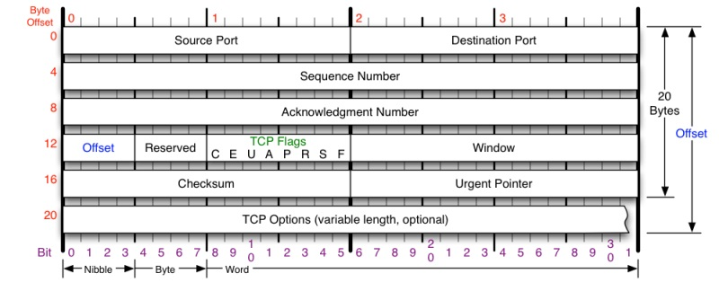

TCP(Transmission Control Protocol) 传输控制协议 UDP(User Datagram Protocol) 用户数据报协议
TCP和UDP都是OSI模型中的运输层的协议，运输层向上面的应用层提供通信服务，它属于面向通信部分的最高层，同时也是用户功能的最底层。从运输层的角度来看，通信的真正的端点并不是主机而是主机中的进程。
网络层为主机之间提供逻辑通信，而运输层为应用进程之间提供端到端的逻辑通信
UDP不提供复杂的控制机制，利用IP提供面向无连接的通信服务。并且它是将应用程序发来的数据在收到的那一刻，立刻按照原样发送到网络上的一种机制。
UDP有两个字段：数据字段和首部字段构成。
首部字段8字节，由4部分组成:
TCP协议比较复杂
TCP首部的前20个字节是固定的，后面有4n字节是根据需要而增加的选项。

源端口和目的端口：各占两个字节。
序号：占4个字节，mod(1<<32) 运算。表示本报文段第一个数据的字节序号，也叫报文段序号
确认号：占4个字节，是期望对方下一个报文段第一个数据字节的序号。若确认号 ＝ N,则表示，到序号N-1为止所有数据都正确收到
数据偏移(offset)：占4位，指出TCP报文段的数据起始处距TCP报文段起始处有多远
保留：占6位
标志位：TCP flags
窗口：占2字节。窗口值为[0,(1<<16)-1]之间的整数。窗口值告诉对方：从本报文首部中的确认号算起，接收方目前允许对方发送的数据量。窗口值处于经常动态变化的状态。
检验和：占2字节。检验和字段检验的范围包括首部和数据这两个部分。计算检验和时需要在TCP报文段之前加上12个字节的伪首部。
紧急指针：占2字节。仅在URG为1时有效，指出了报文段中的紧急数据字节数（紧急数据结束之后是普通数据）。
TCP选项：长度可变，最长达到了40字节。如果没有选项时，TCP的字节长度为20字节。最初规定了一种选项即，MSS(Maximum Segment Size)最大报文段长度。
每条TCP的连接都有两个端点，TCP连接的端点叫做套接字(socket)或者插口
TCP通过滑动窗口实现可靠的数据传输。TCP滑动窗口技术通过动态改变窗口大小来调节两台主机间数据传输。每个TCP/IP主机支持全双工数据传输，因此TCP有两个滑动窗口：一个用于接受数据，一个用于发送数据。
发送窗口由如下构成
接受窗口由如下构成
TCP使用滑动窗口机制。发送窗口里面的序号表示允许发送的序号。发送窗口后沿的后面部分表示已发送且已收到了确认。而发送窗口前沿的前面部分表示不允许发送的。发送窗口的后沿变化情况有两种可能，即不动（没有收到新的确认）和前移（收到了新的确认）。发送窗口的前沿通常是不断向前移动的。
停止等待协议能够在不可靠的传输网络上面实现可靠的通信。每发送完一个分组就停止发送，等待对方确认。在收到确认后再发送下一个分组。分组需要编号。
超时重传是指：只要过了一段时间仍然没有收到确认，就重传前面发送过的分组。因此每发送完一个分组需要设置一个超时计时器，其重传时间应比数据在分组传输的平均往返时间长一些。这种自动重传方式常称为自动重传请求ARQ.
在停止等待协议中，若接收方收到了重复分组，就丢弃该分组，但同时还需要发送确认。
连续ARQ协议可以提高信道利用率。发送方维持一个发送窗口，凡位于放送窗口内的分组都可以连续的发送出去，而不需要等待对方的确认。接收方一般采用累积确认，对按序到达的最后一个分组发送确认，表明到这个分组为止所有分组都已经正确收到了
在某段时间，若对网络中某一资源的需求超过了该资源所能提供的可用部分，网络的性能就会变坏。这种情况就叫做拥塞。
为了进行拥塞控制，TCP的发送方要维持一个拥塞窗口 cwnd的状态变量。拥塞窗口的大小取决于网络的拥塞程度，并且在动态的变化中。发送方让自己的发送窗口取为拥塞窗口和接受方的接受窗口之中较小的一个。
TCP的拥塞控制采用了四种算法,即慢开始，拥塞避免，快重传和快恢复。在网络层，也可以使路由器采用适当的分组丢弃策略（如早期随机检测RED）